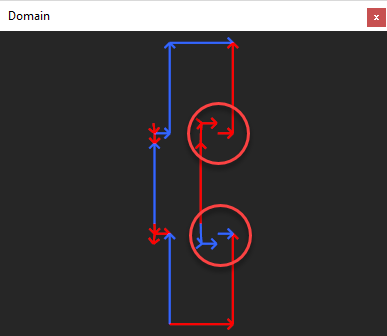
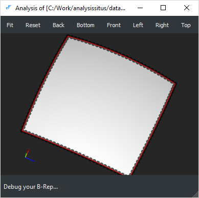
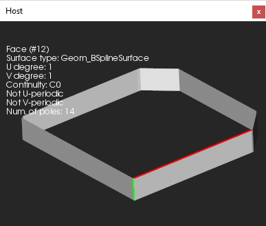

| Analysis Situs ./features/check validity |
| Download | Features | Source code | Terminology | References |
A careful analysis of CAD model validity should employ thinking at several levels of abstraction:
The geometric validity checks are concerned with the mathematics of form. The input data for those checks are the equations of curves and surfaces while the verification methods usually employ some computationally expensive algorithms (intersection tests, sampling, evaluation of derivatives, etc.). The topological validity checks are concerned with the syntactical analysis of the model and perform verification of the data structure consistency. Finally, the analysis of the design intent requires the understanding of the function of the part, its manufacturing constraints and other reasoning which may often require human intervention. The following rule often works in practice: to fix the problem of a lower level, it is necessary to rise to the upper level of abstraction. E.g., to correctly fill a gap due to a missing face, it might be necessary to recognize and recover its containing feature (e.g., to extend and intersect surfaces rather than to patch a hole with a NURBS surface).
The reasoning on the validity of a CAD model should always be based on its application domain. E.g., self-intersection defects might be critical for mesh generation algorithms while they often have zero impact on specific modeling procedures such as unfolding of sheet metals.
From the application point of view, it is rarely needed to distinguish between pure geometric and topological invalidities. Such separation is done for better CAD kernel maintainability and exists only due to the separation between geometry and topology in B-Rep representation scheme. in practice, maintaining representation integrity is a direct function of a geometric modeling system whatever abstraction layers it uses under the cover.
The following table provides a checklist for a CAD model to verify its validity (both geometric and topological). These checks are relevant to a B-Rep representation scheme of OpenCascade kernel exclusively. The set of checks listed below is not full though the most frequently occurring defects are enumerated.
| Check | Tcl command | Issue description |
| Euler-Poincare property | check-euler | Checks if the Euler-Poincare property holds for the user-specified genus. |
| Orientation of vertex in edge | check-vertices-ori | Checks if the vertices of the part are distinguishable by their orientation flags. A valid edge should have one FORWARD vertex and one REVERSED vertex to properly signify its topological extremities. As a result of some poorly implemented modeling operators, this rule may appear to be violated. |
| Orientation of edge in wire | N/A | The edges should be oriented so that their owning contour is traversed in a determined order (clockwise or counterclockwise). |
| Orientation of wire in face | N/A | The wire should be oriented so that the material of its owning face is either enclosed (for the outer wires) or lies outside (for holes). |
| Orientation of face in solid | N/A | The faces of a solid model should be oriented so that to point outwards the bounded volume. This requirement is relaxed for surface modeling (shells). |
| Contour closeness | check-contours |
Checks if the contours of the part faces are closed (have no gaps). The optional
"tolerance" argument is used to tune the precision of coincidence test. You
can find more details in the corresponding chapter.

cad/anomalies/shading_wrongshape_031.brep
|
| Solid closeness (finiteness) | check-finite |
Checks if the solid body is finite. It should be noted that in some workflows
infinite volumes are perfectly valid.
cad/anomalies/shading_wrongshape_005.brep
|
| Open (naked) edges | check-open-edges |
The open edges (those owned by less than two faces) are valid for shells and prohibited for
solid models. To fix this problem, face stitching (sewing) algorithm might be necessary.
cad/anomalies/shading_wrongshape_015.brep
|
| Missing face (gap) | N/A | The gap filling algorithm is required to fix this anomaly. |
| Intersection and overlapping of surfaces | N/A | All surface intersections should be resolved by inserting the corresponding topological primitives (vertices, edges or patches in case of overlapping). If surfaces interact while having no topological resolution, the shape is considered locally faulty. Intersections or overlaps of the trimmed NURBS surfaces are a huge challenge for healing algorithms [Frischmann, 2011]. |
| Singular surface points | N/A | Surface degeneracies usually occur due to the coincidence of NURBS control points. Such surfaces are often used to represent triangular patches, e.g., in ship hull design. Even though the singularity points are usually allowed by a modeler, their existence may cause problems in subsequent operators (e.g., offsets). |
| Missing 3D curve | N/A | The 3D curve is a primary edge representation. If the 3D curve does not exist, it is clearly a problem. To fix the issue, the corresponding p-curves should be evaluated against their host surfaces. The obtained points are then reapproximated. |
| Missing p-curve | N/A | In OpenCascade kernel, the primary 3D curve should be followed by its images in all surface patches meeting at this curve. These p-curves can be recovered by projection of a 3D curve to each host surface. |
| Non-synchronous parameterization of curves | N/A | The 3D curves and the corresponding p-curves should be parameterized synchronously, so that they yield identical points for the same parameter value (with tolerance). |
| Missing seam | N/A | The seam edges correspond to a period value of a periodic surface. These edges are necessary to close the parametric domain of a face. Not all geometric kernels use the notion of seam edges, so it is necessary to recover them sometimes after data exchange. |
| Non-manifoldness | N/A |
A boundary surface is two-manifold if it is homeomorphic to a disk in the
neighborhood of every point (i.e., resembles a two-dimensional Euclidian
space near each point).
Non-manifold vertices, edges and faces might be perfectly valid if they
are modeled like this intentionally. Otherwise, the existence of non-manifold
boundary elements might be a problem for subsequent modeling operators
and manufacturing planning (such models are clearly non-manufacturable).
cad/anomalies/non-manifold/non-manifold-01.brep
|
| Unexpected shape type | N/A | It sometimes happens that the visually fine, closed models are defined as shells instead of being formal solids. Other examples include single faces defined as shells or compound parts wrapping a single result of a solid Boolean operation. These anomalies can be traced down using a topology graph representation of B-Rep model. The graph will contain excessive nodes and/or nodes of improper type. |
| Tolerance inclusion | N/A | A geometric tolerance of a vertex should not be less than a geometric tolerance of an edge. A geometric tolerance of an edge should not be less than a geometric tolerance of a face. |
There are two aspects which contribute to what we call shape "dirtiness" here:
The excessive shape description might lead to an increase of data volume or influence the processing time of geometry-based algorithms. Moreover, excessive shape representation and dirtiness might cause serious numeric problems within the downstream engineering workflows [Frischmann, 2011]. At the same time, all flaws enumerated below do not break the formal validity of a CAD model.
| Problem | Tcl command | Issue description |
| Non-canonic geometry | N/A |
Example: a geometrically planar surface represented with a NURBS surface or
a surface of revolution (like demonstrated by the example below).
cad/anomalies/occ26372_RP.brep
|
| Small edges | heal-small-edges |
Sometimes a CAD model contains excessive number of small (usually straight)
edges which are hard to treat numerically (e.g., when generating FEA meshes).
Such edges can be enlarged by reapproximation.

cad/anomalies/occ22778_square.brep
|
| Small faces | N/A | It is possible to merge small faces by reapproximating them. |
| Non-maximized boundary elements | N/A | Face/edge maximization is usually performed as a post-processing stage of a Boolean operation. |
| High geometric tolerances | check-toler | See the corresponding chapter for details. |
| C0 geometry | split-by-continuity |
The support of C0 geometric primitives is limited in all geometric kernels. It is
usually a good idea to split such entities with the relevant boundary elements (vertices or edges)
to enhance the smoothness of the geometry. Alternatively, for NURBS curves
and surfaces, it is possible to remove knots if the shape is geometrically continuous
though parameterized improperly. The knot insertion algorithm can also be applied
for non-G-smooth geometric elements if a certain deformation (within the prescribed
tolerance) is allowed.

cad/anomalies/from_sat/converted_brep_from_sat_37.brep
|
| Nested local transformations | N/A | In OpenCascade kernel, each topological element might be assigned with a local transformation to place it relative to its parent element. While this capacity of the modeler is convenient for representing assemblies as compounds, we discourage using the transformed boundary elements in a single solid representation. Formally speaking, a local transformation is a property of an arc in the topology graph. In Analysis Situs, it is possible to colorize the arcs for a visual check of internal transformations. It is Ok to have a local transformation for in-compound inclusions and not Ok to have them deeper in the graph. |
| Non-beautified model | N/A | A beautified geometric model is a modification of the input model that incorporates appropriate symmetries and regularities [González-Lluch et al, 2017]. Beautification-pending models usually emerge as a result of reverse engineering of a B-Rep model from a discrete dataset (point clouds, mesh). |
| Ill-defined surface extension | N/A | For some operations like removing face, push/pull, etc. surface extensions are used. It may easily happen that if parameter lines of a surface are converging, the surface extension starts to self-intersect. In such situations, any modeling operators which require surface extensions will likely fail. |
It is necessary to add a few words for the situations when we have a consistent & clean CAD model which is still not valid from the human's point of view. It is not a geometric kernel to blame in such situations. At the same time, a geometric kernel might still be helpful to discover some sorts of violated technological or functional requirements.
| Problem | Tcl command | Issue description |
| Too many details | N/A | The overcomplicated CAD parts may require simplification prior to the engineering analysis, manufacturing planning, data interoperability, visualization, etc. To simplify model, the defeaturing techniques should be employed. |
| Insufficient thickness | N/A | Thickness is a severe requirement, e.g., in die casting manufacturing. |
| Invalid sheet metal | N/A | Non-existing bends or non-constant sheet thickness is somewhat unexpected in sheet metal working. |
Since the Analysis Situs software is mostly focused on individual CAD parts, we do not speak of assembly-specific invalidities, such as collisions, lost instancing, etc.